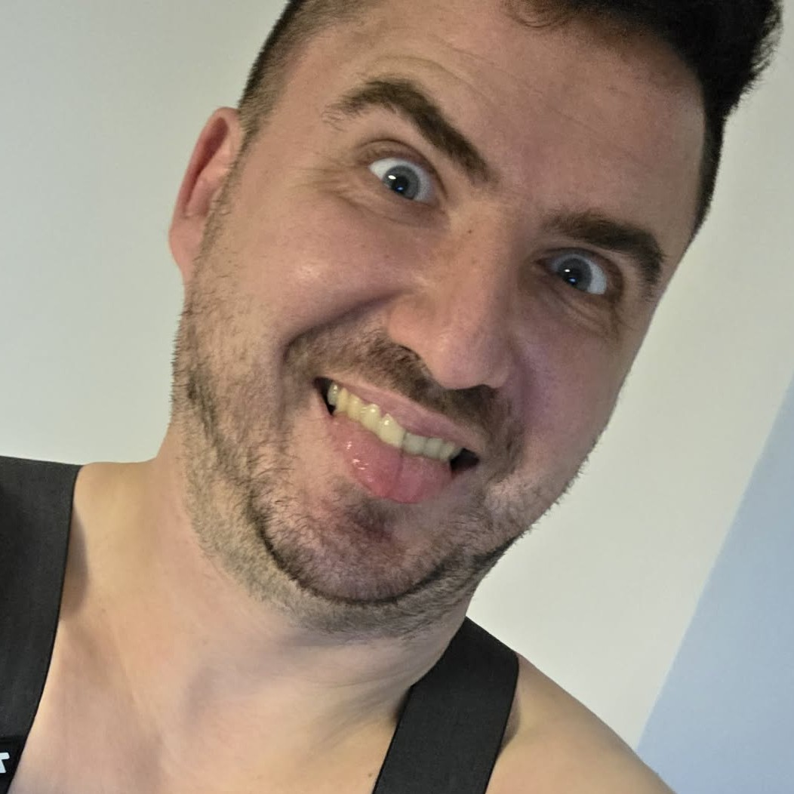

13 MOŽNOSTÍ. NULA DÔKAZOV.
ČO ROBÍ TOMÁŠ?
Nikto nevie. Ani on. Roztoč koleso.

PRIPRAVENÝ NA ĎALŠIU PIČOVINU?#000
TVOJA VEŠTBA
Tomáš v zábere
TAK ČO ZASE VYMÝŠĽA?
Možno pracuje. Možno sedí na hajzli. Koleso má odpoveď.
Predošlé veštby (0)
- Zatiaľ žiadna veštba. Roztoč koleso.
Čo všetko môže robiť? 13 možností
Každá možnosť má rovnakú šancu. Je to náhodný vtip, nie skutočné sledovanie Tomáša.